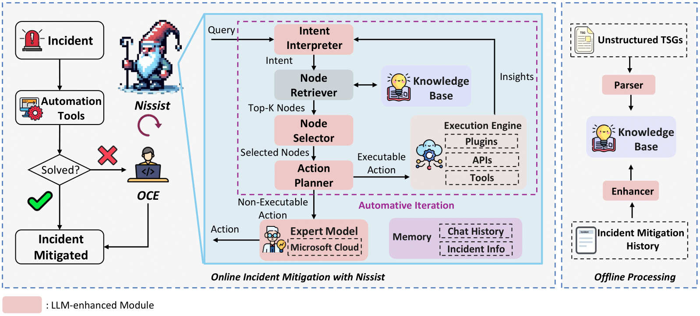
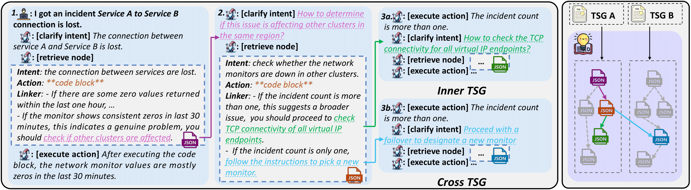

Effective incident management is pivotal for the smooth operation of enterprises-level cloud services. In order to expedite incident mitigation, service teams compile troubleshooting knowledge into Troubleshooting Guides (TSGs) accessible to on-call engineers (OCEs). While automated pipelines are enabled to resolve the most frequent and easy incidents, there still exist complex incidents that require OCEs' intervention. However, TSGs are often unstructured and incomplete, which requires manual interpretation by OCEs, leading to on-call fatigue and decreased productivity, especially among new-hire OCEs. In this work, we propose Nissist which leverages TSGs and incident mitigation histories to provide proactive suggestions, reducing human intervention. Leveraging Large Language Models (LLM), Nissist extracts insights from unstructured TSGs and historical incident mitigation discussions, forming a comprehensive knowledge base. Its multi-agent system design enhances proficiency in precisely discerning user queries, retrieving relevant information, and delivering systematic plans consecutively. Through our user case and experiment, we demonstrate that Nissist significant reduce Time to Mitigate (TTM) in incident mitigation, alleviating operational burdens on OCEs and improving service reliability.
Nissist constructs Knowledge Base offline with the help of Thread, by parsing knowledge from unstructured TSGs and enhances it with knowledge from incident mitigation history not covered in TSGs. Subsequently, it iteratively processes OCE queries. Nissist is designed to mitigate incidents in a fully automated manner. However, due to the complex nature of incidents, not all actions suggested by Nissist can be automatically executed due to the lack of related execution functions in the execution engine. Thus, the non-executable actions are delegated to OCEs for manual execution, while those executale actions are passed to the execution engine, generating insights to trigger the next step of mitigation, automating the mitigation iteration.
Each module, powered by LLMs, serves as an agent responsible for specific tasks, including interpreting intents, selecting the most relevant knowledge (nodes from knowledge base), suggesting actions, etc. These modules concurrently communicate with each other to efficiently mitigate incidents.
This figure illustrates a use case demonstrating industrial practices with Nissist. Given an OCE query Service A to Service B connection is lost, Nissist interprets the query, identifies the intent, and uses it to retrieve and select the most relevant node. The action planner then fills the given parameters, such as service information, into the code block, such as, a Kusto query with parameter placeholders in this use case. After the action is passed to the execution engine, the outcome indicates the network monitor values are mostly zeros in the last 30 mins. Nissist correlates this outcome with the ``Linker'' in the retrieved node, where this outcome indicates a genuine problem and should check if other clusters are affected. Then Nissist generates a new intent How to determine if this issue is affecting other clusters the next round of interaction automatically. This interaction continues until the incident is mitigated or requires human intervention. Additionally, Nissist digests all TSGs into knowledge base, making it possible to discover connections between nodes located in different TSGs. For example, 3b demonstrates another execution result which requires knowledge from a different TSG. Previously, it requires OCEs to take great efforts searching for the knowledge in other TSGs, which often did not list such knowledge in their titles.
@incollection{an2024nissist,
title={Nissist: An incident mitigation copilot based on troubleshooting guides},
author={An, Kaikai and Yang, Fangkai and Li, Liqun and Ren, Zhixing and Huang, Hao and Wang, Lu and Zhao, Pu and Kang, Yu and Ding, Hua and Lin, Qingwei and others},
booktitle={ECAI 2024},
year={2024},
publisher={IOS Press}
}